ML Primer¶
This guide is a primer on the very basics of machine learning that are necessary to complete the assignments and motivate the final system. Machine learning (ML) is a rich and well-developed field with many different models, goals, and learning settings. There are many great texts that cover all the aspects of the area in detail. (I recommend this textbook.) This guide is not that. Our goal is to explain the minimal details of one dataset with one class of model. Specifically, this is an introduction to supervised binary classification with neural networks. The goal of this section is to learn how a basic neural network works to classify simple points.
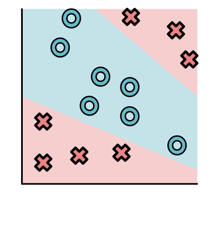{kind=link}
Dataset¶
Supervised learning problems begin with a labeled training dataset. We assume that we are given a set of labeled points. Each point has two coordinates \(x_1\) and \(x_2\), and has a label \(y\) corresponding to an O or X. For instance, here is one O labeled point:
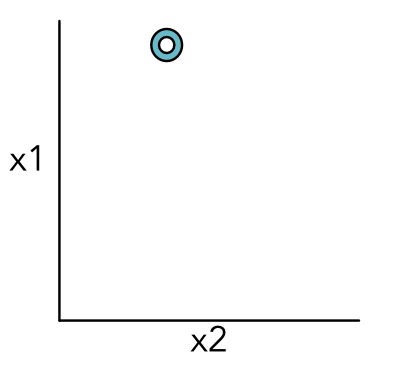{kind=link}
Here's another:
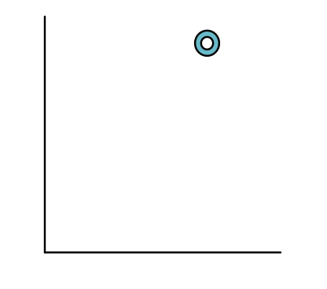{kind=link}
And here is an X labeled point.
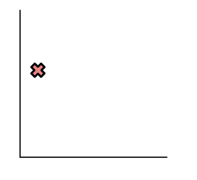{kind=link}
It is often convenient to plot all of the points together on one set of axes.

Here we can see that all the O points are in the top-right and all the X points are on the bottom-left. Not all datasets is this simple, and here is another dataset where points are split up a bit more.
Later in the class, we will consider datasets of different forms, e.g. a dataset of handwritten numbers, where some are 8's and others are 2's:
{kind=link}

Here is an example of what this dataset looks like.
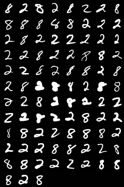{kind=link}
Model¶
In addition to a dataset, our ML system need to specify a model type that we want to fit to the data. A model is a function that assigns labels to data points. In 2D, we can visualize a model by its decision boundary. For instance, consider the following (Model A).
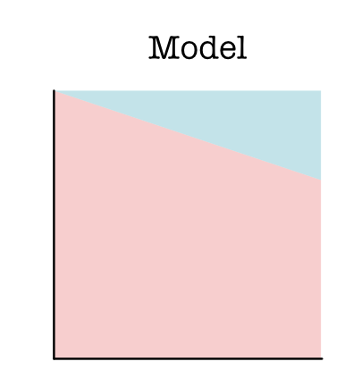{kind=link}
For most of the data points, the model puts them in class X. Only for a little area on the top right would it decide to put those points in class O.
We can overlay the simple dataset described ealier over this model. This tells us roughly how well the model fits this dataset.
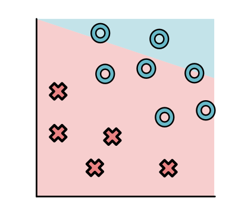{kind=link}
Models can take many different forms, Here is another model, which we will discuss more below, that splits the data points up based on three regions (Model B).
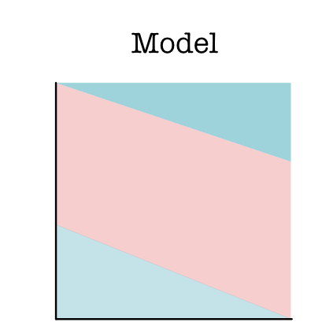{kind=link}
Models may also have strange shapes and even disconnected regions. Any blue/red split will do, for instance (Model C):
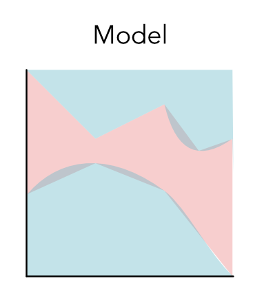{kind=link}
A model class specifies the general shape of models that you want to explore. Given that we as programmers don't know what the dataset looks like, we try to give a class of functions for our system to explore. Machine learning is the process of finding the best model from that class.
The first model class we consider is linear models. Linear models separate the data space with only a single straight line. For instance, Model A is a linear model, but an intuitively "better" model looks like this:

Note that Model B also uses lines, but it is not a linear model: it uses multiple lines to split up the space.
Parameters¶
Once we have decided on our model class, we need a way to move between models in that class. Ideally, we would have internal knobs that alter the properties of the model. In the case of linear models, there are two main knobs we might use,
rotating the linear separator ("slope")
{kind=link}
changing the separator cutoff ("intercept")
{kind=link}
Parameters are the set of numerical values that fully define a model's decisions. Parameters are critical for storing how a model acts, and necessary for producing its decision on a given data point.
In the case of linear models and binary classification, we can write down the linear model as:
Here \(w_1, w_2, b\) are parameters, \(x_1, x_2\) are the input point, and the model predicts X if \(m\) is greater than 1 and O otherwise. The semi-color notation indicates which arguments are for parameters and which are for data.
Note
See https://wikipedia.org/wiki/Linear_equation for a review of linear equation, and an explanation for why this corresponds to parameterizing the slope and intercept of a line.
Loss¶
When we look at our data, we can clearly see that some models are good and make no classification errors:
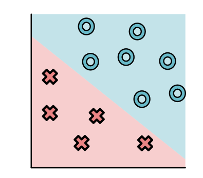{kind=link}
And some are bad and make multiple errors:
In order to find a good model, we need to first define what good means. We do this through a loss function that scores how badly we are currently doing. A good model is the one that makes this loss as small as possible.
Our loss function will be based on the distance and direction of the line from each point to the decision boundary. You can show that this distance is equivalent to the absolute value of the function \(m()\) above.
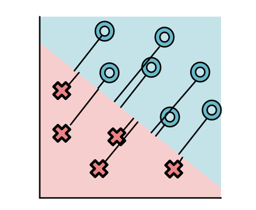{kind=link}
For simplicity, let us consider a single point with different models.
This point might be classified the correct side and very far from this line (Point A, "great"):
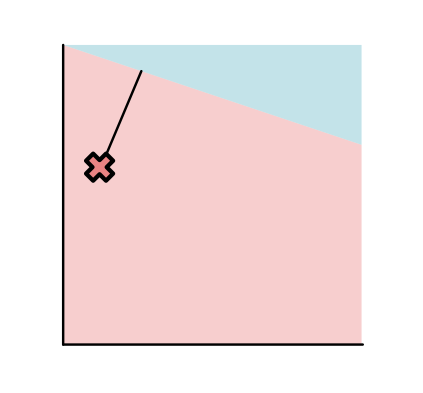{kind=link}
Or it might be on the correct side of the line, but close to the line (Point B, "worrisome"):
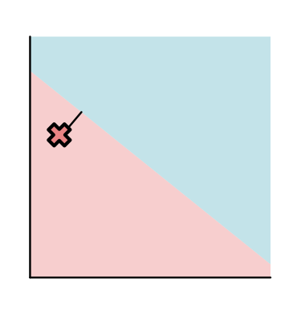{kind=link}
Or this point might be classified on the wrong side of the line (Point C, "bad"):
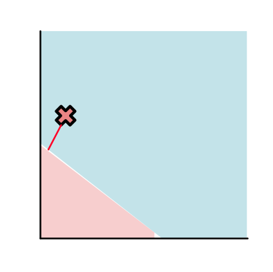{kind=link}
The loss is determined based on a function of this distance. The most commonly used function (and the one we will focus on) is the sigmoid function. For strong negative inputs, it goes to zero, and for strong positive, it goes to 1. In between, it forms a smooth S-curve.

As shown below, the losses of three X points land on the following positions for the sigmoid curve. Almost zero for Point A, middle value for Point B, and nearly one for point C.
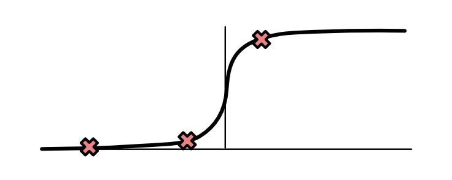{kind=link}
The total loss for a model is the product of each of the individual losses. It's easy to see that a good model yields a lower loss than a bad one.
Fitting Parameters¶
The model class tells us what models we can consider, the parameters tell us how to specify a given model, and the loss tells us how good our current model is. What we need is a method for finding a good model given a loss function. We refer this step as parameter fitting.
Unfortunately, parameter fitting is quite difficult. For all but the simplest ML models, it is a challenging and computational demanding task. For our sample problem, there are just 3 parameters, but nowadays some of the large models may have billions of parameters that need to be fit.
This is the step where libraries like MiniTorch come in handy. This library aims to demonstrate how with careful coding, we can setup a framework to fit parameters for supervised classification, in an automatic and efficient manner.
The library focuses on one form of parameter fitting: gradient descent. Intuitively, gradient descent works in the following manner.
Compute the loss function, \(L\), for the data with the parameters.
See how small changes to each of the parameters would change the loss.
Update the parameters with a small change in the direction that locally most reduces the loss.
Let us return to the incorrect model above.
As we noted, this model has a high loss, and we want to consider ways to "turn the knobs" of the parameters to find a better model. Let us focus on the parameter controlling the intercept of the model.
We can consider how the loss changes with respect to just varying this parameter. It seems like the loss will go down if we lower the intercept a bit.
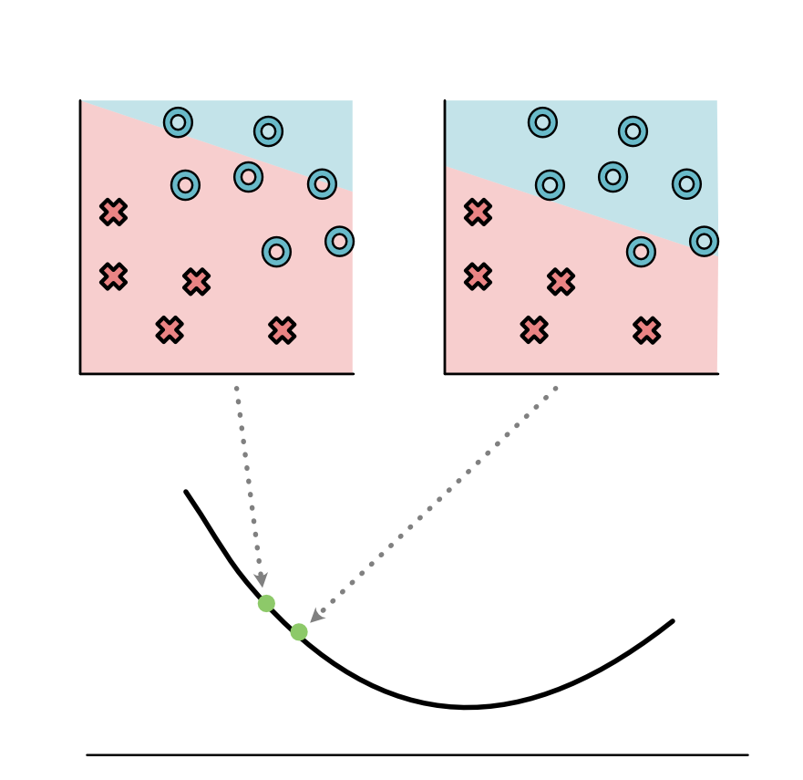{kind=link}
Doing this then leads to a better model.
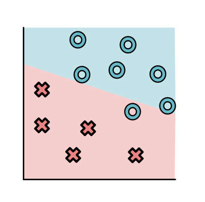{kind=link}
We can repeat this process for the intercept as well as for all the other parameters in the model.
But how did we know how the loss function changed if we changed the intercept? For a small problem, we can just move it a bit and see. But remember that machine learning models can have billions of parameters, so this would take a ton of time.
A better approach is to utilize calculus and take the derivative of the loss function with respect to the parameter \(L'_b\). If we can efficiently and automatically take this derivative, it tells us how to change the parameter to update its value to fit any loss. Even better, if we can efficiently take a set of derivatives (known as a gradient) for all the parameters, then we know which direction they all should move.
The first 4 modules are MiniTorch are dedicated to implementing this fitting procedure efficiently.
Neural Networks¶
The linear model class can be used to find good fits to the data we have considered so far, but it fails for data that splits up into multiple segments. These datasets are not linearly separable.
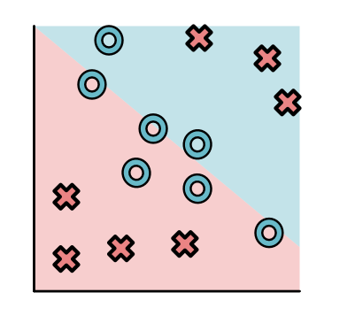{kind=link}
An alternative model class for this style of data is a neural network. Neural networks can be used to specify a much wider range of separators.
Intuitively, neural networks divide classification into two or more stages. Each stage uses a linear model to reshape the data into new points. The final stage is a linear classifier over the transformed point.
Let's look at our dataset.
A neural network might first produce a (yellow) separator to pull apart the top red points.
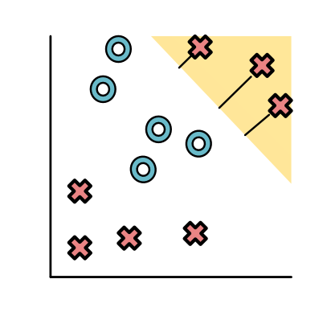{kind=link}
And then produce a (green) separator to pull apart the bottom red points.
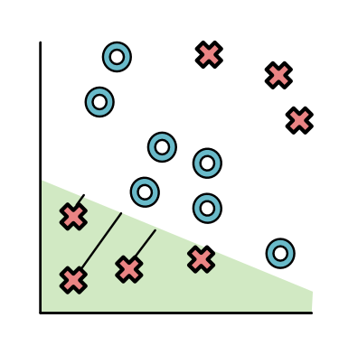{kind=link}
The neural network is allowed to transform the points based on the distance from these separators (very similar to the loss function above). It can use whatever function it wants to do this transformation. Ideally, the function would make the points in yellow and green high, and the other points low. One function to do this is the ReLU function. (ReLU stands for Rectified Linear Unit, a very complicated way of saying "delete values below 0".):

For the yellow separator, the ReLU yields the following values.

Basically the top X's are positive and the bottom O's and X's are 0. Something very similar happens for the green separator.
Finally yellow and green become our new \(x_1, x_2\). Since all the O's are now at the origin it is very easy to separate out the space.
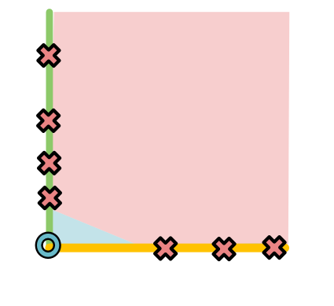{kind=link}
Looking back at the original model, this process appears like it has produced two lines to pull apart the data.
Mathematically we can think of the transformed data a values \(h_1, h_2\) that we get from applying separators with different parameters to the original data. The final prediction then applies a separator to \(h_1, h_2\).
Here \(w_1, w_2, w^0_1, w^0_2, w^1_1, w^1_2, b, b^0, b^1\) are all parameters. We have gained more flexible models, at the cost of now needing to fit many more parameters to the data.
This neural network will be the main focus for the first couple models. It appears quite simple, but fitting it effectively will require building up systems infrastructure. Once we have this infrastructure, though, we will be able to easily support most modern neural network models.